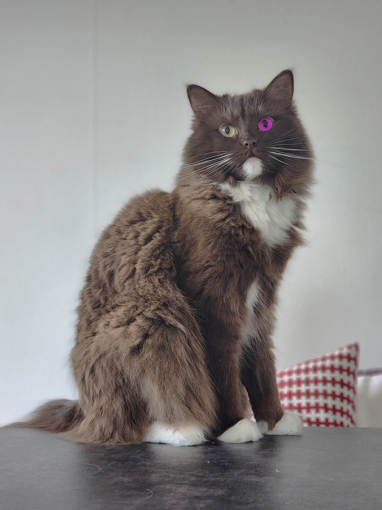
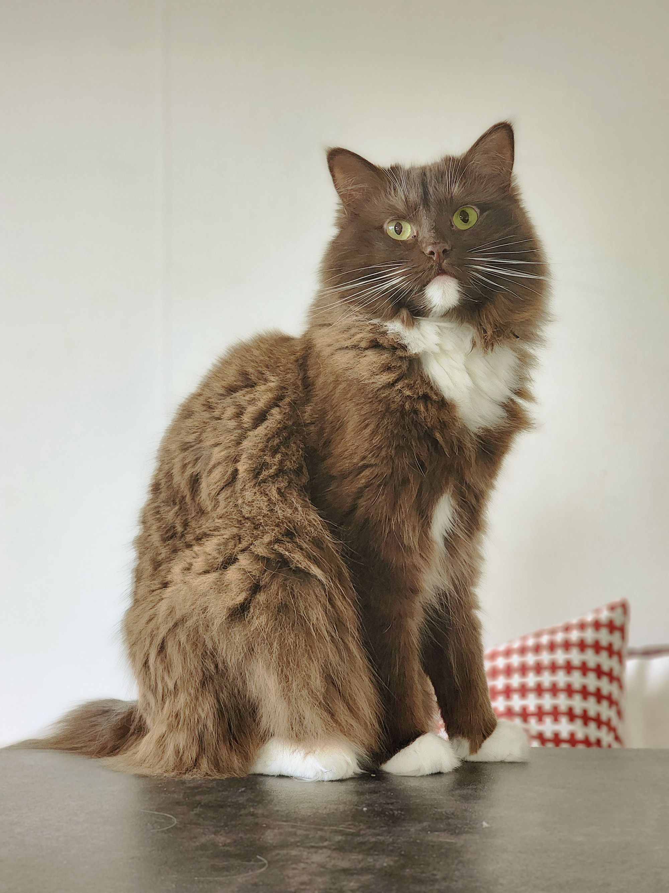
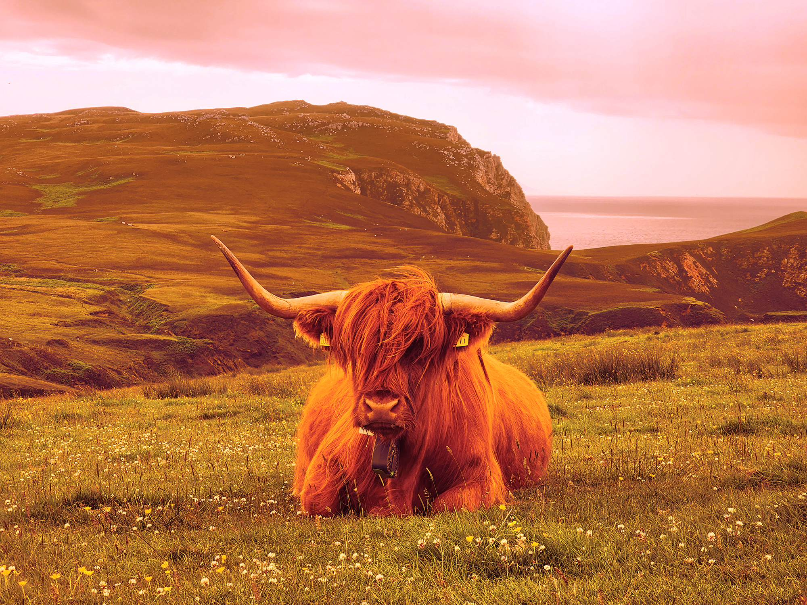
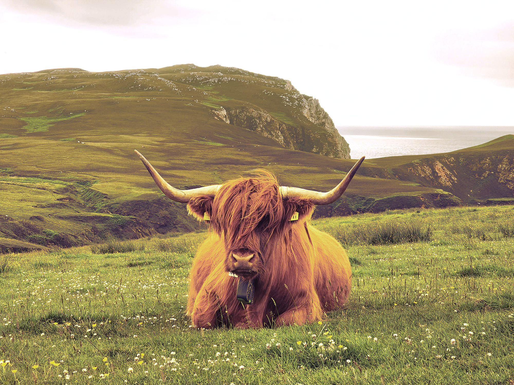
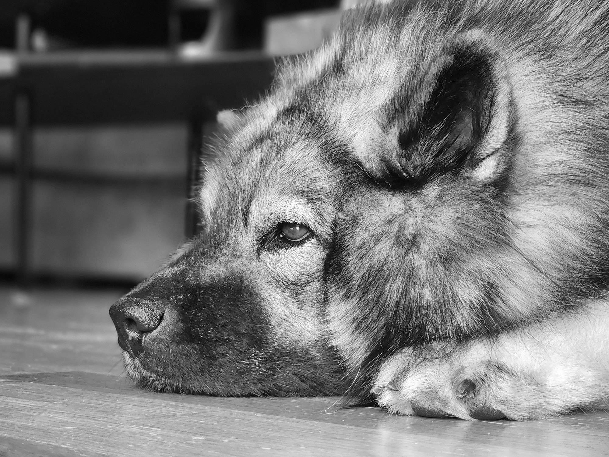
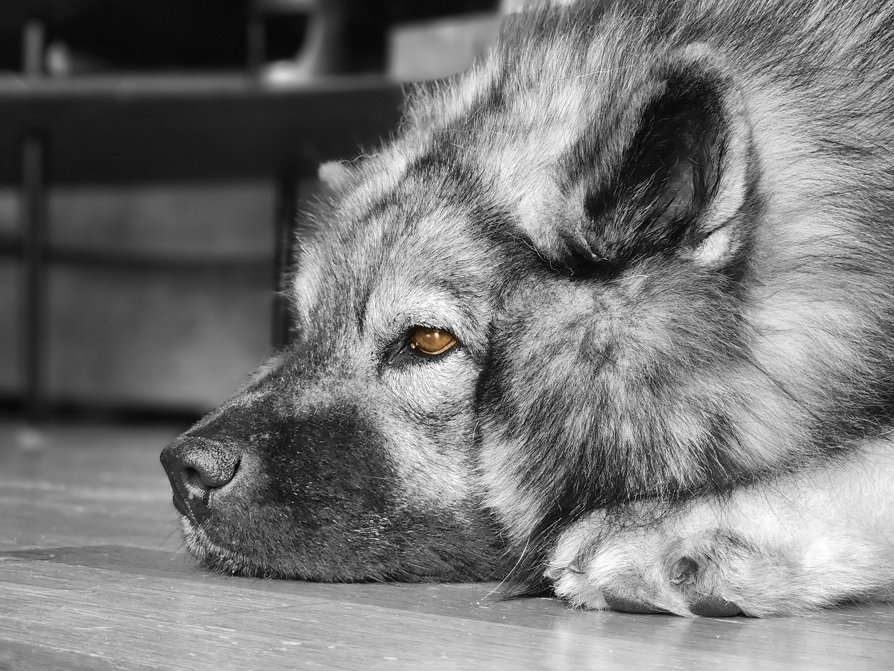

Bildredigering
Här visar jag bilderna före och efter redigering. Jag har färgseendeproblem, så jag har jobbat mycket med fasta värden i programmet i stället för att bara gå på känsla.
Bild 1 – Katten

Före

Efter
I bild ett har jag gjort bilden ljusare och lite varmare med Brightness/Contrast och Color Balance, eftersom den var grå och kall. Katten hade ett lila öga som jag färgade om till gulgrönt med Hue/Saturation, så att det matchar det andra ögat.
Bild 2 – Kon

Före

Efter
I bild två hade hela bilden ett starkt rött och orange färgstick. Jag använde Color Balance på mellantoner och högdagrar för att få tillbaka en ljus himmel och grönt gräs, och sänkte sedan mättnaden med Hue/Saturation så att färgerna blev naturliga.
Bild 3 – Hunden

Före

Efter
Bild tre är seriens svartvita bild. Jag tog bort ett föremål i bakgrunden med Spot Healing Brush och färgade sedan ögat bärnstensbrunt med Hue/Saturation och Colorize, så att ögat blir det enda med färg i bilden.